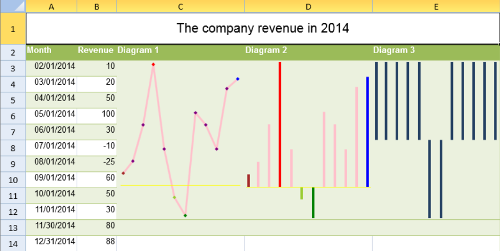

You can use formulas to create column, line, and winloss sparklines.

The formulas have the following options:
| Option | Description |
| Data | A range reference that represents sparkline data. For example: A1:C3. |
| DataOrientation | A number that represents the sparkline data orientation, 0 is vertical, 1 is horizontal. |
| DateAxisData | A range reference that represents sparkline date axis data. For example: D1:F3. This setting is optional. |
| DateAxisOrientation | A number that represents the sparkline date axis orientation, 0 is vertical, 1 is horizontal. This setting is optional. |
| Setting | A string with JSON format. For example: "{axisColor:rgb(255,255,0),firstMarkerColor:brown,highMarkerColor:red,lastMarkerColor:blue,lowMarkerColor:green,markersColor:purple,negativeColor:yellowgreen, seriesColor:pink,displayXAxis:true,showFirst:true,showHigh:true,showLast:true,showLow:true,showNegative:true,showMarkers:true,lineWeight:3,displayHidden:false, displayEmptyCellsAs:1,rightToLeft:false,minAxisType:1,maxAxisType:1,manualMax:5,manualMin:-3}". This setting is optional. |
The following table lists the JSON format string and the equivalent sparkline setting.
| Json Property | SparklineSetting.Options Property |
| AXISCOLOR | axisColor |
| FIRSTMARKERCOLOR | firstMarkerColor |
| HIGHMARKERCOLOR | highMarkerColor |
| LASTMARKERCOLOR | lastMarkerColor |
| LOWMARKERCOLOR | lowMarkerColor |
| MARKERSCOLOR | markersColor |
| NEGATIVECOLOR | negativeColor |
| SERIESCOLOR | seriesColor |
| DISPLAYEMPTYCELLSAS | displayEmptyCellsAs |
| RIGHTTOLEFT | rightToLeft |
| DISPLAYHIDDEN | displayHidden |
| DISPLAYXAXIS | displayXAxis |
| SHOWFIRST | showFirst |
| SHOWHIGH | showHigh |
| SHOWLAST | showLast |
| SHOWLOW | showLow |
| SHOWNEGATIVE | showNegative |
| SHOWMARKERS | showMarkers |
| MANUALMAX | manualMax |
| MANUALMIN | manualMin |
| MAXAXISTYPE | maxAxisType |
| MINAXISTYPE | minAxisType |
| LINEWEIGHT | lineWeight |
The line, column, and winloss formulas have the following format:
=LINESPARKLINE(data, dataOrientation, dateAxisData, dateAxisOrientation, setting)
=COLUMNSPARKLINE(data, dataOrientation, dateAxisData, dateAxisOrientation, setting)
=WINLOSSSPARKLINE(data, dataOrientation, dateAxisData, dateAxisOrientation, setting)
This example uses formulas to create column, line, and winloss sparklines.
| JavaScript |
Copy Code
|
|---|---|
activeSheet.addSpan(0, 0, 1, 5); activeSheet.getCell(0, 0, GC.Spread.Sheets.SheetArea.viewport).value("The company revenue in 2014").font("20px Arial").hAlign(GC.Spread.Sheets.HorizontalAlign.center).vAlign(GC.Spread.Sheets.VerticalAlign.center); var table1 = activeSheet.tables.add("table1", 1, 0, 13, 5, GC.Spread.Sheets.Tables.TableThemes.medium4); table1.filterButtonVisible(false); activeSheet.setValue(1, 0, "Month"); activeSheet.setValue(1, 1, "Revenue"); activeSheet.setValue(1, 2, "Diagram 1"); activeSheet.setValue(1, 3, "Diagram 2"); activeSheet.setValue(1, 4, "Diagram 3"); for (var i = 2; i < 14; i++) { activeSheet.setValue(i, 0, new Date(2014, i - 1, 1)); } activeSheet.getRange(-1, 0, -1, 1).formatter("mm/dd/yyyy"); activeSheet.setValue(2, 1, 10); activeSheet.setValue(3, 1, 20); activeSheet.setValue(4, 1, 50); activeSheet.setValue(5, 1, 100); activeSheet.setValue(6, 1, 30); activeSheet.setValue(7, 1, - 10); activeSheet.setValue(8, 1, -25); activeSheet.setValue(9, 1, 60); activeSheet.setValue(10, 1, 50); activeSheet.setValue(11, 1, 30); activeSheet.setValue(12, 1, 80); activeSheet.setValue(13, 1, 88); activeSheet.addSpan(2, 2, 10, 1); activeSheet.setFormula(2, 2, '=LINESPARKLINE(B3:B14,0,A3:A14,0,"{axisColor:rgb(255,255,0),firstMarkerColor:brown,highMarkerColor:red,lastMarkerColor:blue,lowMarkerColor:green,markersColor:purple,negativeColor:yellowgreen,seriesColor:pink,displayXAxis:true,showFirst:true,showHigh:true,showLast:true,showLow:true,showNegative:true,showMarkers:true,lineWeight:3,displayHidden:false,displayEmptyCellsAs:1,rightToLeft:false,minAxisType:1,maxAxisType:1,manualMax:5,manualMin:-3}")'); activeSheet.addSpan(2, 3, 10, 1); activeSheet.setFormula(2, 3, '=COLUMNSPARKLINE(B3:B14,0,A3:A14,0,"{axisColor:rgb(255,255,0),firstMarkerColor:brown,highMarkerColor:red,lastMarkerColor:blue,lowMarkerColor:green,markersColor:purple,negativeColor:yellowgreen,seriesColor:pink,displayXAxis:true,showFirst:true,showHigh:true,showLast:true,showLow:true,showNegative:true,showMarkers:true,lineWeight:3,displayHidden:false,displayEmptyCellsAs:1,rightToLeft:false,minAxisType:1,maxAxisType:1,manualMax:5,manualMin:-3}")'); activeSheet.addSpan(2, 4, 10, 1); activeSheet.setFormula(2, 4, '=WINLOSSSPARKLINE(B3:B14,0,A3:A14,0)'); activeSheet.setRowHeight(0, 50); for (var i = 1; i < 14; i++) { activeSheet.setRowHeight(i, 25); } activeSheet.setColumnWidth(0, 80); activeSheet.setColumnWidth(2, 200); activeSheet.setColumnWidth(3, 200); activeSheet.setColumnWidth(4, 200); |
|